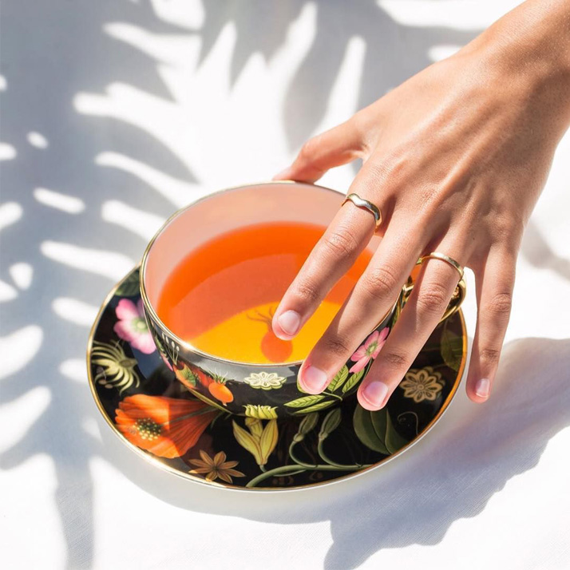
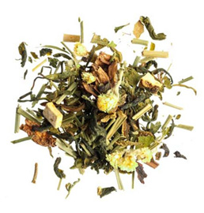
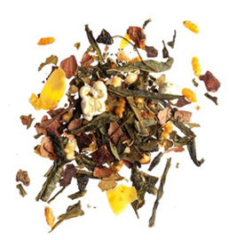
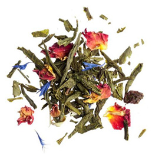
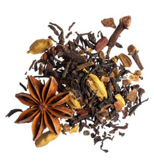
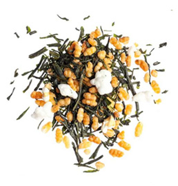

TEA
은은하고 향긋한 허브티

블랙 / 차이 / 우롱 / 그린 /
마차/ 화이트 / 루이보스
& 꿀/ 허브/ 과일





그린푸드(green food)'로
지칭되는 녹색 음식을 먹으면
몸과 마음이 편안해진다
상큼하고 깔끔한 맛이 매력인
화이트 티다.
꽃과 잎에서 수집해서
좋은 영양소가 들어가 있다.
따뜻하게 우려낸 루이보스와
밀접하게 관련된 꿀 브러시는
홍차를 연상케하는 풍성한 향을
가지고 있다.
우롱 차는 대표적인 맛이
두가지가 있는데 달콤한 맛과
woody 한 향이 난다.